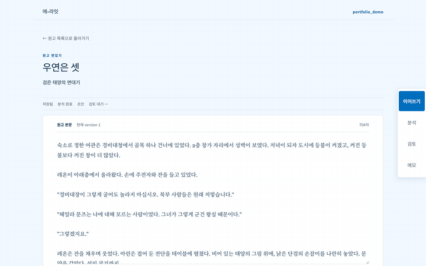
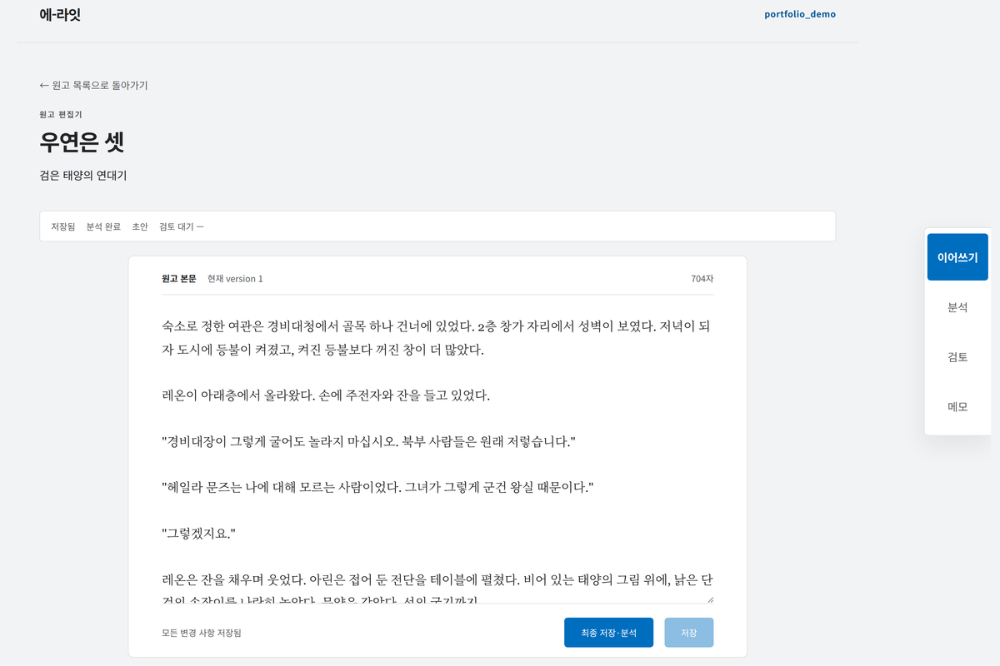

AI Writer System
In development 개발 중Find the setting.
Check the source.
Keep writing.설정을 찾고,
근거를 확인하고,
다음 장을 씁니다.
For long-form creators: review memory suggestions against the manuscript, approve them, and retrieve them while drafting. Drafting, generation and review run locally.장편 창작자가 원고의 근거를 보고 기억을 승인한 뒤, 다음 집필에서 검색하는 흐름입니다. 로컬에서 집필·생성·검토·검색까지 동작합니다.
Experience & evidence 사용 경험과 구현 근거 ↗